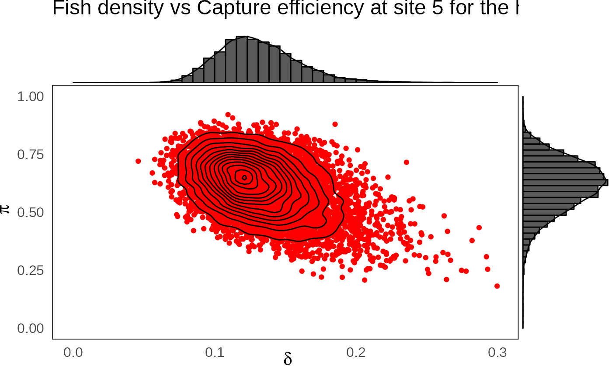

Hierarchical Successive Removal
hierarchical-successive-removal.Rmd
library(hbm4ecology)
library(rjags)
library(tidyverse)
library(bayesplot)
library(GGally)
library(ggExtra)The model rely on successive discrete (Binomial) distribution which
the size parameter can get very low. This renders Normal approximation
unreliable. Using Stan with Hamiltonian Monte Carlo would
require to marginalize over the successive Binomial distribution. This
requires some burdensome calculus. Hence we will use jags
with a standard MCMC.
Fitting the simple independent model with successive removal technique
#dataList <- source(file = "Chap_10_2_Hierarchical_SuccRem2_Nivelle/data_Hierarchical_SuccRem2_Nivelle.txt")
data("SucRemNivelle")
model_string <- "model
{
for (i in 1:I)
{
# Prior
# -----
# Prior on capture efficiency
pi[i] ~ dbeta(1, 1)
# Prior on fish density
d[i] ~ dgamma(1, 1)
# Number of fish on each site i (surface S[i] in the data set)
Enu[i] <- S[i] * d[i]
nu[i] ~ dpois(Enu[i]) T(,500)
# Likelihood
# ----------
C1[i] ~ dbin(pi[i], nu[i])
nur1[i] <- nu[i] - C1[i]
C2[i] ~ dbin(pi[i], nur1[i])
nur2[i] <- nur1[i] - C2[i]
C3[i] ~ dbin(pi[i], nur2[i])
}
}"
model <- jags.model(file = textConnection(model_string),
data = SucRemNivelle,
n.chains = 5)
#> Warning in jags.model(file = textConnection(model_string), data =
#> SucRemNivelle, : Unused variable "AI" in data
#> Warning in jags.model(file = textConnection(model_string), data =
#> SucRemNivelle, : Unused variable "I_pred" in data
#> Warning in jags.model(file = textConnection(model_string), data =
#> SucRemNivelle, : Unused variable "AI_pred" in data
#> Compiling model graph
#> Resolving undeclared variables
#> Allocating nodes
#> Graph information:
#> Observed stochastic nodes: 74
#> Unobserved stochastic nodes: 124
#> Total graph size: 333
#>
#> Initializing model
# Inferences
update(model, n.iter = 1000)
posterior_sample <- coda.samples(model,
variable.names = c("pi", "d", "nu"),
n.iter = 10000,
thin = 10)
mcmc_trace(posterior_sample, pars = c("d[5]", "pi[5]"))
df_ind <- extract_wider(posterior_sample)
p <- df_ind %>%
select(`pi.5`, `d.5`) %>%
ggplot(aes(`d.5`, `pi.5`)) +
geom_point(col = "red") +
geom_density_2d(col = "black") +
theme_bw(base_size = 15L, base_line_size = 0) +
ylim(c(0,1)) +
theme(legend.position="none")+
labs(x=expression(delta),
y=expression(pi),title="Fish density vs Capture efficiency at site 5")
ggExtra::ggMarginal(p, type = "densigram", bins = 40)
#> Warning: Ignoring unknown parameters: bins
#> Ignoring unknown parameters: bins
#> Ignoring unknown parameters: bins
#> Ignoring unknown parameters: bins
Hierarchical modeling
model_string_hier <- "model
{
# Priors
# ------
# Hyperprior for the trapping efficiency
mu.p ~ dbeta(1,1)
log.u.p ~ dunif(0,10)
u.p <- exp(log.u.p)
a <- mu.p * u.p
b <- (1-mu.p) * u.p
# Compute standard deviation of p
var.p <- mu.p*(1-mu.p)*(1/(u.p+1))
sd.p <- sqrt(var.p)
# Hyperpriror for the density
mu.d ~ dgamma(1,1)
sd.d ~ dgamma(1,0.001)
# Parameterization of the Gamma distribution
c1 <- pow(mu.d,2) / pow(sd.d,2)
d1 <- mu.d / pow(sd.d,2)
for (i in 1:I)
{
# Prior on capture efficiency
pi[i] ~ dbeta(a,b)
# Prior on fish density
d[i] ~ dgamma(c1,d1)
# Number of fish (S[i] in the data set)
Enu[i] <- S[i] * d[i]
nu[i] ~ dpois(Enu[i]) T(,500)
}
# Likelihood
# ----------
for (i in 1:I)
{
C1[i] ~ dbin(pi[i], nu[i])
nur1[i] <- nu[i] - C1[i]
C2[i] ~ dbin(pi[i], nur1[i])
nur2[i] <- nur1[i] - C2[i]
C3[i] ~ dbin(pi[i], nur2[i])
}
}
"
model_hier <- jags.model(
file = textConnection(model_string_hier),
data = SucRemNivelle,
n.chains = 5)
#> Warning in jags.model(file = textConnection(model_string_hier), data =
#> SucRemNivelle, : Unused variable "AI" in data
#> Warning in jags.model(file = textConnection(model_string_hier), data =
#> SucRemNivelle, : Unused variable "I_pred" in data
#> Warning in jags.model(file = textConnection(model_string_hier), data =
#> SucRemNivelle, : Unused variable "AI_pred" in data
#> Compiling model graph
#> Resolving undeclared variables
#> Allocating nodes
#> Graph information:
#> Observed stochastic nodes: 74
#> Unobserved stochastic nodes: 128
#> Total graph size: 353
#>
#> Initializing model
# Inferences
update(model_hier, n.iter = 2000)
posterior_sample_hier <- coda.samples(
model_hier,
variable.names = c("a", "b", "c1", "d1", "mu.d", "mu.p",
"pi", "d", "nu"),
n.iter = 20000,
thin = 10)
mcmc_trace(posterior_sample_hier,
pars = c("a", "b", "c1", "d1", "mu.d", "mu.p","d[5]", "pi[5]"))
df_hier <- extract_wider(posterior_sample_hier)
phier <- df_hier %>%
select(`pi.5`, `d.5`) %>%
ggplot(aes(`d.5`, `pi.5`)) +
geom_point(col = "red") +
geom_density_2d(col = "black") +
ylim(c(0,1)) + xlim(c(0,0.3)) +
theme_bw(base_size = 15L, base_line_size = 0) +
theme(legend.position="none")+
labs(x=expression(delta),
y=expression(pi),title="Fish density vs Capture efficiency at site 5 for the hierarchical model")
ggExtra::ggMarginal(phier, type = "densigram", bins = 40)
#> Warning: Removed 1 rows containing non-finite values (stat_density2d).
#> Removed 1 rows containing non-finite values (stat_density2d).
#> Warning: Removed 1 rows containing missing values (geom_point).
#> Warning: Ignoring unknown parameters: bins
#> Ignoring unknown parameters: bins
#> Ignoring unknown parameters: bins
#> Ignoring unknown parameters: bins
#> Warning: Removed 1 rows containing non-finite values (stat_density2d).
#> Warning: Removed 1 rows containing missing values (geom_point).
df_hier %>%
select("a", "b", "c1", "d1", "mu_d", "mu_p") %>%
GGally::ggpairs(
columnLabels = c("a", "b", "c", "d", "mu[delta]", "mu[pi]"),
labeller = "label_parsed"
)
Fast sampling technique with abundance index
model_string_AI <- "model
{
# Priors
# ------
# Hyperprior for the trapping efficiency
mu.p ~ dbeta(1,1)
log.u.p ~ dunif(0,10)
u.p <- exp(log.u.p)
a <- mu.p * u.p
b <- (1-mu.p) * u.p
# Compute standard deviation of p
var.p <- mu.p*(1-mu.p)*(1/(u.p+1))
sd.p <- sqrt(var.p)
# Hyperpriror for the density
mu.d ~ dgamma(1,1)
sd.d ~ dgamma(1,0.001)
# Parameterization of the Gamma distribution
c1 <- pow(mu.d,2) / pow(sd.d,2)
d1 <- mu.d / pow(sd.d,2)
for (i in 1:I)
{
# Prior on capture efficiency
pi[i] ~ dbeta(a,b)
# Prior on fish density
d[i] ~ dgamma(c1,d1)
# Number of fish (S[i] in the data set)
Enu[i] <- S[i] * d[i]
nu[i] ~ dpois(Enu[i]) T(,500)
}
# Hyperpriors for the mean abundance index
k ~ dgamma(1, 0.001)
phi ~ dbeta(1, 1)
f <- phi/(1-phi)
# Priors for the Abundance index
for (i in 1:I) {
alpha.AI[i] <- k*f*d[i]
mu.AI[i] ~ dgamma(alpha.AI[i], f)
}
# Likelihood
# ----------
for (i in 1:I) {
C1[i] ~ dbin(pi[i], nu[i])
nur1[i] <- nu[i] - C1[i]
C2[i] ~ dbin(pi[i], nur1[i])
nur2[i] <- nur1[i] - C2[i]
C3[i] ~ dbin(pi[i], nur2[i])
AI[i] ~ dpois(mu.AI[i])
}
# Predictive distribution of the density conditionnally upon
# observed abundance indices
for (i in 1:I_pred) {
AI_pred[i] ~ dpois(mu.AI_pred[i])
mu.AI_pred[i] ~ dgamma(alpha.AI_pred[i], f)
alpha.AI_pred[i] <- k * d_pred[i] * f
d_pred[i] ~ dgamma(c1,d1)
# Link with observed abundance indices
}
}
"We have the following abundance index data
# Abundance indices data
# Nivelle
data_AI <- list(
AI = c(
6, 17, 12, 17, 11, 22, 16, 25, 25, 15, 11,
4, 10, 6, 9, 24, 13, 16, 14, 10, 25, 4,
NA, 24, NA, 63, NA, NA, 21, 41, 44, NA, 5),
I_pred=65,
AI_pred = c(1, 2, 3, 4, 5, 6, 7, 8, 9, 10, 11, 12, 13, 14, 15, 16, 17, 18, 19, 20, 21, 22, 23, 24, 25,
26, 27, 28, 29, 30, 31, 32, 33, 34, 35, 36, 37, 38, 39, 40, 41, 42, 43, 44, 45, 46, 47, 48,
49, 50, 51, 52, 53, 54, 55, 56, 57, 58, 59, 60, 61, 62, 63, 64, 65)
)
model_AI <- jags.model(file = textConnection(model_string_AI),
data =SucRemNivelle,#c(dataList$value, data_AI),
n.chains = 5)
#> Compiling model graph
#> Resolving undeclared variables
#> Allocating nodes
#> Graph information:
#> Observed stochastic nodes: 167
#> Unobserved stochastic nodes: 298
#> Total graph size: 717
#>
#> Initializing model
# Inferences
update(model_AI, n.iter = 2000)
posterior_sample_AI <- coda.samples(
model_AI,
variable.names = c("a", "b", "c1", "d1", "mu.d", "mu.p", "sd.d", "sd.p",
"pi", "d", "nu", "phi", "k", "f", "mu.AI",
"d_pred", "mu.AI_pred"),
n.iter = 20000,
thin = 10)Plotting the results
Figure 10.13 page 253, posterior distributions of parameters for the full AI + successive removal model
df_AI <- extract_wider(posterior_sample_AI)
df_AI %>%
select("mu_d", "sd_d", "mu_p", "sd_p", "phi", "k") %>%
GGally::ggpairs(
columnLabels = c("mu[delta]", "sigma[delta]", "mu[pi]", "sigma[pi]", "phi", "k"),
labeller = "label_parsed",
lower = list(continuous = wrap("points", alpha = 0.3,size = .5))
) +
theme_linedraw(base_size = 15L, base_line_size = 0) +
theme(axis.ticks = element_line(size = 15/22))
Figure 10.14 page 249, marginal posterior distributions of salmon densities (\(\delta\)) for each site index.
fit_hier_l <- extract_longer(posterior_sample_hier) %>% mutate(model = "hierarchical")
fit_ind_l <- extract_longer(posterior_sample) %>% mutate(model = "independent")
fit_ai_l <- extract_longer(posterior_sample_AI) %>% mutate(model = "abundance_index")
bind_rows(fit_hier_l, fit_ind_l, fit_ai_l) %>%
filter(str_detect(parameter, "^d\\.")) %>%
rename("delta" = value) %>%
mutate(Site = as_factor(str_sub(parameter, 3))) %>% # 6 = length("d.") + 1
ggplot() +
aes(x = Site, y = delta, fill = model ) +
geom_boxplot(outlier.shape = NA, outlier.size = .25) +
scale_x_discrete(guide = guide_axis(angle = 90)) +
ylim(c(0,0.75)) +
scale_fill_manual(values = c("gray10", "gray50", "gray90")) +
ylab("Fish density") +
theme_classic(base_size = 15L)
#> Warning: Removed 2448 rows containing non-finite values (stat_boxplot).
Figure 10.17 page 251: Posterior means of Salmon juvenile density (under hierarchical bayesian model) versus observed Abundance Indices.
df_delta_AI <- fit_hier_l %>%
filter(str_detect(parameter, "^d\\.")) %>%
rename("delta" = value) %>%
mutate(Site = as_factor(str_sub(parameter, 3))) %>%
group_by(Site) %>%
summarise(mean_delta = mean(delta)) %>%
mutate(abundance = data_AI$AI)
df_delta_AI %>%
ggplot(aes(x = abundance, y = mean_delta)) +
ylim(c(0, .4)) + xlim(c(0, 70)) +
geom_point() +
xlab("Abundance indices") +
ylab("Estimated fish density") +
theme_classic(base_size = 15L)
#> Warning: Removed 5 rows containing missing values (geom_point).
Figure 10.20 page 254: Predictive posterior distribution of Salmon juvenile density versus Abundance Indices (50% and 95% credible interval).
Warning: La légende du libre n’est pas correct, il s’agit d’intervalle de crédibilité à 80%.
fit_ai_l %>%
filter(str_detect(parameter, "^d_pred.")) %>%
mutate(AI = as.numeric(str_sub(parameter, 8))) %>%
rename("delta_pred" = value) %>%
group_by(AI) %>%
summarise(qs = quantile(delta_pred,
c(.1, .25, .5, .75, .9)),
prob = c(.025, .25, .5, .75, .975)) %>%
pivot_wider(names_from = prob, values_from = qs) %>%
ggplot(aes(x = AI, y = `0.5`)) +
geom_ribbon(aes(ymin = `0.025`, ymax = `0.975`), fill = "gray50") +
geom_ribbon(aes(ymin = `0.25`, ymax = `0.75`), fill = "gray75") +
geom_line() +
geom_point(data = df_delta_AI,
mapping = aes(x = abundance, y = mean_delta)) +
xlab("Abundance indices") +
ylab("Posterior predictive of fish density") +
theme_classic(base_size = 15L)
#> `summarise()` has grouped output by 'AI'. You can override using the `.groups`
#> argument.
#> Warning: Removed 5 rows containing missing values (geom_point).
fit_ai_l %>%
filter(str_detect(parameter, "^d_pred.")) %>%
mutate(AI = as.numeric(str_sub(parameter, 8))) %>%
rename("delta_pred" = value) %>%
group_by(AI) %>%
summarise(qs = quantile(delta_pred,
c(.025, .25, .5, .75, .975)),
prob = c(.025, .25, .5, .75, .975)) %>%
pivot_wider(names_from = prob, values_from = qs) %>%
ggplot(aes(x = AI, y = `0.5`)) +
geom_ribbon(aes(ymin = `0.025`, ymax = `0.975`), fill = "gray50") +
geom_ribbon(aes(ymin = `0.25`, ymax = `0.75`), fill = "gray75") +
geom_line() +
geom_point(data = df_delta_AI,
mapping = aes(x = abundance, y = mean_delta)) +
xlab("Abundance indices") +
ylab("Posterior predictive of fish density") +
theme_classic(base_size = 15L)
#> `summarise()` has grouped output by 'AI'. You can override using the `.groups`
#> argument.
#> Warning: Removed 5 rows containing missing values (geom_point).